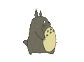

Native macOS · Menu bar · Swift + AppKit
A dog, a horse, a soot sprite, Totoro. It trots when the machine is calm and breaks into a sprint when the system is under load — a live, ambient read on CPU, memory, GPU, network, disk, or fan, tucked into the status bar you already stare at.
Drag the system load. The animation speed is remapped live through the preset's min→max range — exactly how the app maps a 0–1 load fraction to a speed multiplier.
↑ real preset ranges from gifs/presets.json · self-throttles under Low Power / thermal / memory pressure
Unbounded rates (network / disk / swap) auto-scale to a btop-style adaptive ceiling. Every reader is unprivileged — the app only ever reads load, never adds to it.



…plus Dog (Black), Horse (Black), Chihiro white/black, Totoro white/black, and a wide Totoro group (white/black) — 12 in all. Drop in any .gif to make your own.
Flip Keep Awake in the menu and the app spawns caffeinate -i -w <pid> — idle sleep is held off while long work runs, but the display can still nap. The -w <pid> binds it to the app, so it's reaped the instant the app quits or crashes; no orphaned sleep lock.
Idle-sleep only (the screen may still sleep), unprivileged, OS-reaped. Lid-close, Low Power Mode, and memory pressure are deliberately not disengage triggers — see DESIGN-system.md §22.
# install — clone, compile, symlink onto PATH (no Xcode project, no Homebrew) curl -fsSL https://raw.githubusercontent.com/binlecode/menubar-load-runner/main/install.sh | bash # then run from anywhere — default preset, or pick a companion + load source menubar-load-runner totoro --load-source gpu # start at login — per-user LaunchAgent, no root, no .app bundle ./scripts/install-login-item.sh chihiro # clean uninstall — removes only what the installer created ~/.local/share/menubar-load-runner/uninstall.sh
The whole app is one .swift file compiled by a zsh launcher with swiftc -O. No Xcode project, no SwiftPM package, no build system to learn.
A CADisplayLink advances frames against real elapsed time and the screen's refresh rate — smooth at any speed, and it pauses itself entirely when the item is occluded.
Frames are swapped as a layer's CGImage contents — no per-frame redraw or layout — so a visible, animating icon costs about ~0.5% of one CPU core in ~20 MB, and drops to 0% CPU when hidden. It also caps its own speed under Low Power / thermal / memory pressure, so it never adds to the load it measures.
Keyword, menu title, and speed range all live in presets.json (width comes from the GIF's own aspect ratio). Add a preset by editing data — zero Swift changes.
On launch it reads your checkout's origin release tags — the only network call the app ever makes. A newer tag shows an Update available menu item; applying it is a deliberate two-click action (git pull --ff-only), never automatic.
Install with a single curl … | bash — it clones, compiles, and symlinks onto your PATH; uninstall.sh reverses exactly what it created. Open source (MIT), no signing or Homebrew.